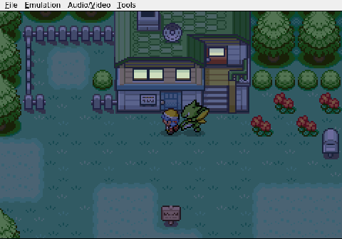
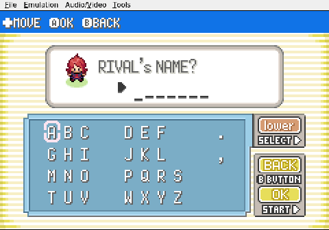
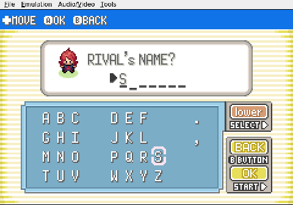
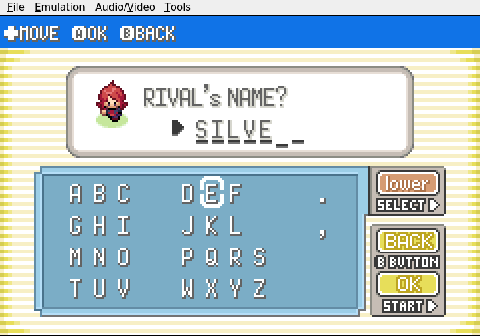

Gemini plays Pokemon Heart & Soul, Run 2
The Red-Haired Thief
The AI painstakingly reports a crime to the local authorities.
Gemini stumbles back into New Bark Town after a long, meandering walk and finds Professor Elm's lab cordoned off. A police officer stands inside, questioning Elm about a stolen Pokémon. The officer turns to Gemini. Did it see anyone suspicious on the route?

It did. The red-haired boy. And it knows his name.

The naming screen appears, and what should take a moment becomes a small production. Gemini nudges the cursor to S. Then I. Then L. A pause, a course correction, and V lands in place. E follows. One last deliberate keystroke brings R home. The name locks in: SILVER.

Six letters, entered with the care of someone defusing a bomb. The officer has a suspect, and the run has its antagonist.
